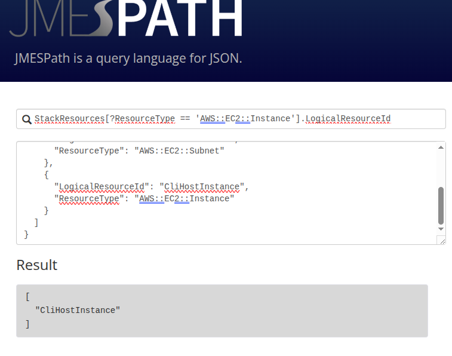
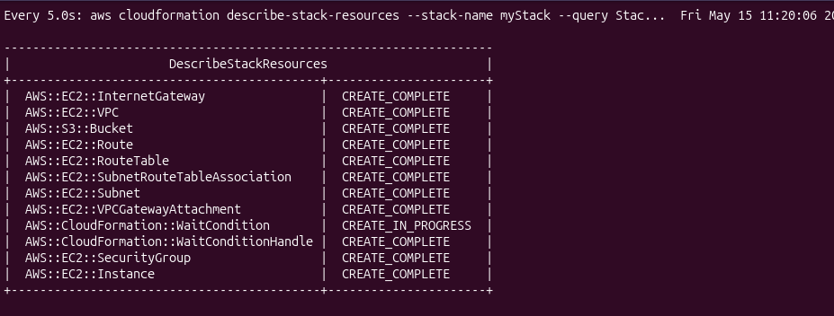
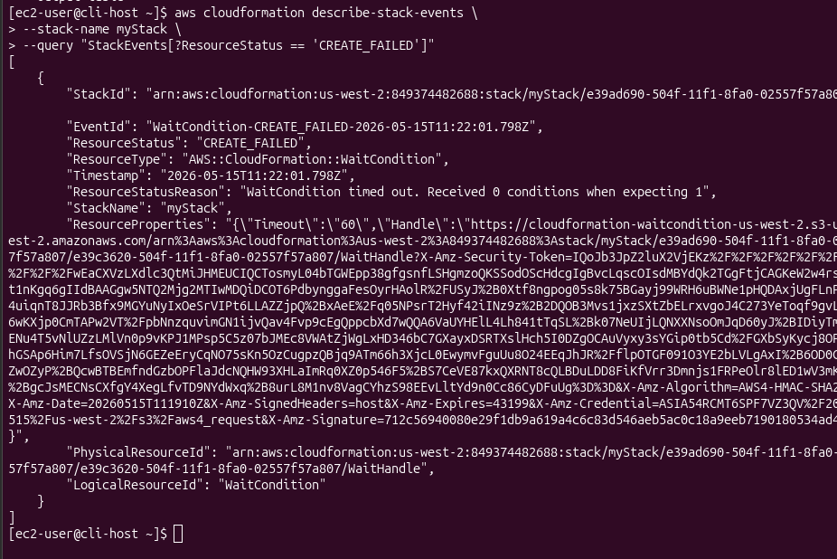
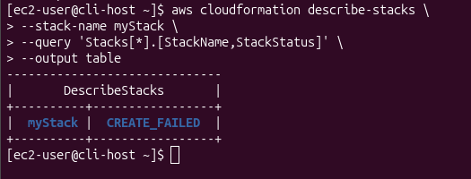
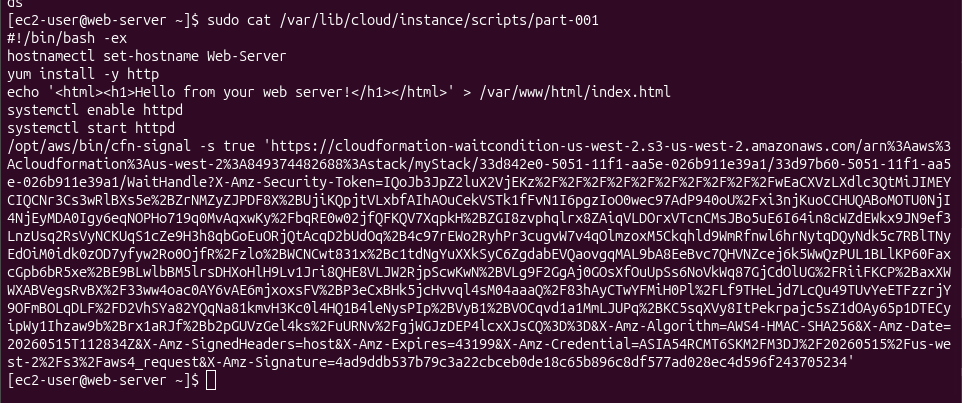
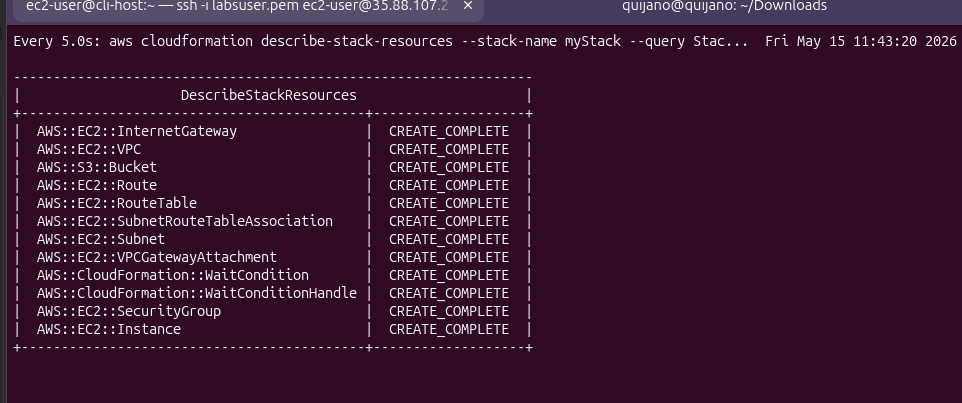
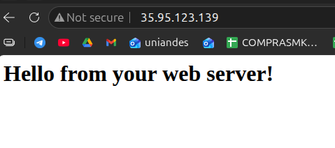
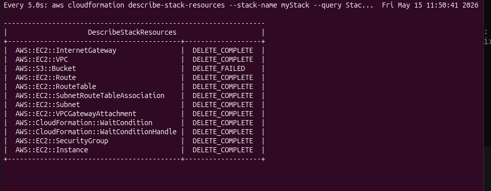

Task 1 — JMESPath
Query JSON structures in the browser-based playground. The same syntax is used in
every --query parameter of the AWS CLI for the rest of the lab.
A failing create-stack driven by a one-character typo in a userdata script. The
stack rolls back, the symptom hides on the EC2 instance, and the fix only becomes visible
after re-running with --on-failure DO_NOTHING and reading cloud-init
logs. The lab also covers drift detection and a delete-stack that fails by design
when an S3 bucket is not empty.
Four tasks: practice JMESPath queries against JSON, troubleshoot a broken stack, detect configuration drift after a manual change, and observe how CloudFormation protects an S3 bucket with objects from being deleted.
Query JSON structures in the browser-based playground. The same syntax is used in
every --query parameter of the AWS CLI for the rest of the lab.
First create-stack fails with WaitCondition timed out.
Retry with --on-failure DO_NOTHING, SSH to the web server, and find the
real cause in the userdata script: yum install -y http instead of
httpd.
Manually edit the SG (port 22 to My IP) and upload a file to the bucket.
detect-stack-drift reports the SG as MODIFIED, but the bucket
stays IN_SYNC. delete-stack then fails because the bucket is
no longer empty.
JMESPath is the query language behind every AWS CLI --query parameter.
The playground at jmespath.org lets you test expressions against JSON
documents directly. Two documents were used: a desserts sample
(provided by the lab) and the output of describe-stack-resources.
The lab walks through six expressions. The last two are the most useful because
they are the same patterns repeated in every --query later on:
filter by attribute, then project a single field.
| JMESPath expression | Result |
|---|---|
desserts[1].ingredients |
Array of ingredients for the second dessert. |
desserts[?calories > `300`] |
Only desserts whose calories exceed 300. |
desserts[?calories > `300`].name |
Same filter, projecting only name. |
StackResources[*].LogicalResourceId |
List of every logical ID in the stack. |
StackResources[?ResourceType == 'AWS::EC2::Instance'] |
Full record of the EC2 instance entry inside the stack. |
StackResources[?ResourceType == 'AWS::EC2::Instance'].LogicalResourceId |
["CliHostInstance"] — the answer to the lab's bonus question. |

StackResources by ResourceType and project LogicalResourceId → ["CliHostInstance"]list[?attr == 'value'].field — filter then project. Every interesting
--query in the rest of the lab is a variant of this.
create-stack
The core of the lab. Standard CloudFormation pattern: stack starts, most resources
succeed, then everything rolls back. The error message points at WaitCondition,
but that's the symptom — not the cause.
After ~3 min, resources start being deleted. Status: CREATE_FAILED →
ROLLBACK_COMPLETE.
describe-stack-events with a JMESPath filter for
CREATE_FAILED. Reason:
WaitCondition timed out. Received 0 conditions when expecting 1.
Re-run create-stack with --on-failure DO_NOTHING so the
EC2 instance survives the failure and is available for inspection.
SSH to the web server. cat part-001 shows
yum install -y http — should be httpd. The shebang
#!/bin/bash -ex aborts the script on that line, so the signal to
cfn-signal never runs.
Patch template1.yaml (http → httpd),
delete-stack, create-stack again. All resources
CREATE_COMPLETE; the web page loads.
create-stack — failure visible mid-flightaws cloudformation create-stack \
--stack-name myStack \
--template-body file://template1.yaml \
--capabilities CAPABILITY_NAMED_IAM \
--parameters ParameterKey=KeyName,ParameterValue=vockeywatch -n 5 -d for live refresh:watch -n 5 -d \
aws cloudformation describe-stack-resources \
--stack-name myStack \
--query 'StackResources[*].[ResourceType,ResourceStatus]' \
--output tableCREATE_COMPLETE; the
WaitCondition stayed in CREATE_IN_PROGRESS until the
60-second timeout, then the whole stack started rolling back.
describe-stack-resources under watch at 11:20 —
everything green except AWS::CloudFormation::WaitCondition.
That single resource is what will fail.
CREATE_FAILEDThe full event list is unreadable. JMESPath filters it down to just the failing
event so the ResourceStatusReason is visible at a glance:
aws cloudformation describe-stack-events \
--stack-name myStack \
--query "StackEvents[?ResourceStatus == 'CREATE_FAILED']"
"ResourceStatusReason": "WaitCondition timed out. Received 0 conditions when expecting 1".
Useful but not actionable yet — the WaitCondition is the messenger.
WaitCondition just waited for a signal that never arrived.
The signal never arrived because something on the instance failed silently.
--on-failure DO_NOTHINGDefault behaviour: CloudFormation deletes every resource on failure, including the EC2 instance whose logs would explain the problem. Solution: delete the failed stack first, then re-create with rollback disabled.
aws cloudformation delete-stack --stack-name myStack
aws cloudformation create-stack \
--stack-name myStack \
--template-body file://template1.yaml \
--capabilities CAPABILITY_NAMED_IAM \
--on-failure DO_NOTHING \
--parameters ParameterKey=KeyName,ParameterValue=vockeyThis time, when WaitCondition times out, the rest of the stack stays
in CREATE_COMPLETE and the instance keeps running:

describe-stacks --output table: status is
CREATE_FAILED, not ROLLBACK_COMPLETE. Resources are
still alive — the web server can be inspected.
SSH from the CLI Host to the web server's private IP (same VPC, key already present) and read what cloud-init actually executed:
tail -50 /var/log/cloud-init-output.log
sudo cat /var/lib/cloud/instance/scripts/part-001The userdata script, as rendered by CloudFormation on the instance:

part-001 on the web server. Line 4: yum install -y http
— the package is httpd. yum exits non-zero, and the
shebang #!/bin/bash -ex aborts the rest of the script.
yum install -y http → No package http available, exit code 1.#!/bin/bash -e (the -e flag) → script aborts on the first error.cfn-signal at the end of the script never executes.WaitCondition never receives the success signal → times out after 60 s.CREATE_FAILED.template1.yaml line ~128 in the userdata section:
http → httpd.delete-stack to clear the failed stack, then
create-stack with the corrected template (left
--on-failure DO_NOTHING in place — harmless when the deploy works).CREATE_COMPLETE:
CREATE_COMPLETE, including
AWS::CloudFormation::WaitCondition. The web server signalled success.
Outputs and opened it in a browser:
35.95.123.139:
"Hello from your web server!" served by httpd.
Two manual changes (one to the SG, one to the S3 bucket), then ask CloudFormation if it notices. No screenshots were captured for this task — documented here as commands and observed results.
0.0.0.0/0 to My IP.myfile to the
bucket created by the stack.# Start the drift check (returns a StackDriftDetectionId)
aws cloudformation detect-stack-drift --stack-name myStack
# Poll the detection status
aws cloudformation describe-stack-drift-detection-status \
--stack-drift-detection-id <driftId>
# Get a readable per-resource drift table
aws cloudformation describe-stack-resources \
--stack-name myStack \
--query 'StackResources[*].[ResourceType,ResourceStatus,DriftInformation.StackResourceDriftStatus]' \
--output table
# Show only resources that drifted, with PropertyDifferences
aws cloudformation describe-stack-resource-drifts \
--stack-name myStack \
--stack-resource-drift-status-filters MODIFIEDObserved:
AWS::EC2::SecurityGroup → MODIFIED. The
PropertyDifferences output shows the CIDR changed from
0.0.0.0/0 to the lab's public IP.AWS::S3::Bucket → IN_SYNC, despite the uploaded file.NOT_CHECKED — drift detection has
per-resource-type coverage gaps.update-stack does not heal driftRe-running update-stack with the original template returns an error
along the lines of No updates are to be performed. Drift has to be reconciled
manually — either by reverting the manual change, or by updating the template to
match the new desired state.
delete-stack Fails by Design
Standard cleanup attempt. CloudFormation deletes everything except the S3 bucket, because
the bucket now contains myfile from Task 3.
aws cloudformation delete-stack --stack-name myStack
watch -n 5 -d \
aws cloudformation describe-stack-resources \
--stack-name myStack \
--query 'StackResources[*].[ResourceType,ResourceStatus]' \
--output tableEvery resource progresses to
DELETE_COMPLETE except one: AWS::S3::Bucket ends in
DELETE_FAILED. The stack itself enters
DELETE_FAILED rather than disappearing.

DELETE_COMPLETE,
AWS::S3::Bucket stuck at DELETE_FAILED. CloudFormation
refuses to delete a non-empty bucket.
DELETE action returns an error. This protects against accidental data loss.
DELETE_FAILED screenshot above.
The intended path, kept here as a theoretical reference and not as evidence of work performed:
# Retry delete-stack, telling CloudFormation to skip the bucket
aws cloudformation delete-stack \
--stack-name myStack \
--retain-resources MyBucketNotes from reading the guide:
--retain-resources takes the logical IDs from the
template (in this lab the bucket's logical ID is MyBucket — confirmed
via JMESPath in Task 1's pattern).describe-stack-resources filtered to find the failed bucket's logical
ID) as input to the next (delete-stack --retain-resources).The CloudFormation CLI calls used across the lab, grouped by intent.
aws cloudformation create-stack --stack-name myStack --template-body file://template1.yaml --capabilities CAPABILITY_NAMED_IAM --parameters ParameterKey=KeyName,ParameterValue=vockey--on-failure DO_NOTHING — keep resources alive when the stack fails (essential for userdata troubleshooting).watch -n 5 -d aws cloudformation describe-stack-resources … — refresh every 5 s, highlight diffs.aws cloudformation describe-stack-events --stack-name myStack --query "StackEvents[?ResourceStatus == 'CREATE_FAILED']"aws cloudformation describe-stacks --stack-name myStack --output tabletail -50 /var/log/cloud-init-output.log · sudo cat /var/lib/cloud/instance/scripts/part-001aws cloudformation detect-stack-drift --stack-name myStackaws cloudformation describe-stack-drift-detection-status --stack-drift-detection-id <id>aws cloudformation describe-stack-resource-drifts --stack-name myStack --stack-resource-drift-status-filters MODIFIEDaws cloudformation describe-stack-resources --query 'StackResources[*].[ResourceType,ResourceStatus,DriftInformation.StackResourceDriftStatus]' --output tableaws cloudformation delete-stack --stack-name myStackaws cloudformation delete-stack --stack-name myStack --retain-resources MyBucket — theoretical, not executed in this run.#!/bin/bash -e form a fail-fast pair: any error in userdata stops the script and the stack fails loudly instead of silently producing a broken instance.--on-failure DO_NOTHING is the troubleshooting switch — without it, the instance whose logs explain the failure is deleted before it can be inspected./var/log/cloud-init-output.log and /var/lib/cloud/instance/scripts/part-001 on the instance, not in CloudFormation events.list[?attr == 'value'].field is the universal filter-and-project pattern for AWS CLI --query.update-stack does not reconcile drift — it has to be fixed manually, either in the template or by reverting the change.delete-stack by design. --retain-resources is the documented escape hatch (not exercised in this lab).
The lab's value is not the deployment — it's the failure. A one-character typo
(http vs httpd) produces a generic CloudFormation symptom
(WaitCondition timed out) that says nothing about the real problem.
Solving it requires using CloudFormation's own escape hatches:
--on-failure DO_NOTHING to preserve evidence, and
describe-stack-events with JMESPath filters to isolate signal from noise.
The drift and delete tasks reinforce that CloudFormation is a state machine over template properties, not a full inventory tool. It does not track object contents, and it refuses destructive operations on stateful resources — which is correct behaviour, not a bug.